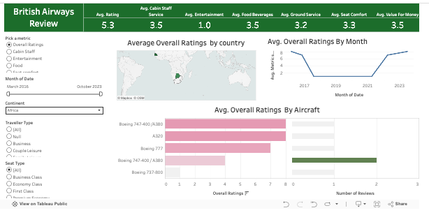
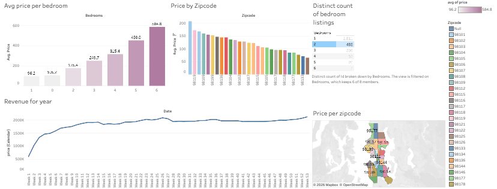
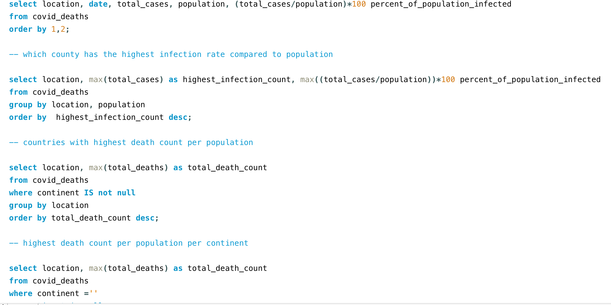
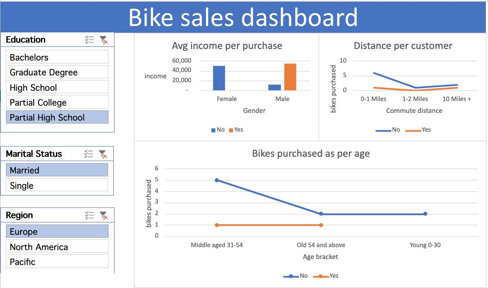
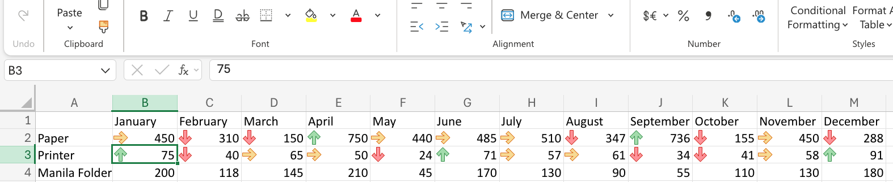
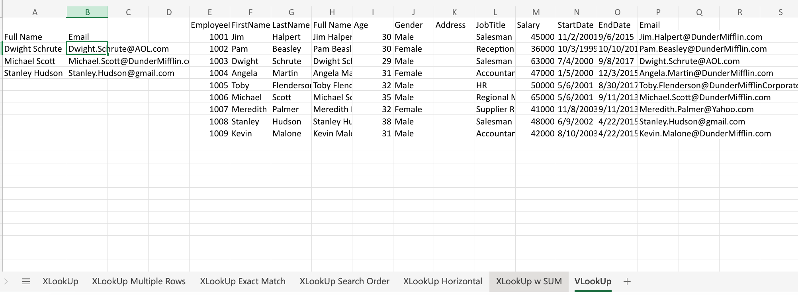
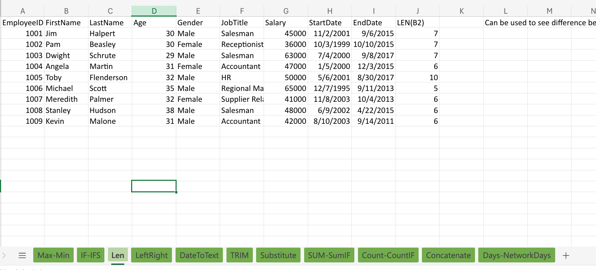

This section showcases my data analysis projects built using SQL,
Excel, and Tableau, where I explored real datasets to
uncover patterns, trends, and actionable insights.
Through these projects, I learned how to clean and structure
messy data, write efficient queries, and translate raw
numbers into clear, visual stories that support decision-making.
The most interesting part for me has been discovering
how even simple datasets can reveal surprising insights
when you ask the right questions—turning data from
something overwhelming into something meaningful and intuitive.

I have made a dynamic tableau project with multiple filters to check reviews for food, comfort, staff, entertainment, etc. Created joins on multiple tables and got this beautiful dashboard where you can select from different matrix, aircraft, seat, traveller type, location, etc.

This tableau project discovers how location and property type heavily influence pricing and occupancy, turning raw listing data into clear, interactive insights about the short-term rental market.

This project is a COVID-19 data analysis where I used SQL to explore global COVID trends such as infection rates, death counts, and vaccination progress across different countries.

This project shows how bike sales is getting affected by each individual. I have used data cleaning, pivot table and dashboard to get to the interactive visuals.

This project focuses on using Excel’s conditional formatting tools to highlight trends, patterns, and outliers within datasets. I worked with real-world style data to visually emphasize key values such as high/low performance, duplicates, and status indicators. It helped me understand how simple visual cues can make data interpretation faster and more intuitive without needing complex analysis.

In this project, I used Excel’s XLOOKUP function to efficiently retrieve and match data across large datasets. I practiced replacing traditional lookup methods with XLOOKUP to pull relevant information such as IDs, names, and corresponding values from different tables. This strengthened my understanding of data relationships and improved my ability to handle structured data more effectively.

This project involved using a range of Excel formulas including Data Aggregation, Data Lookup & Reference, Data Cleaning & Manipulation, Logical & Error Handling, Date & Time Analysis, Essential Tips for Data Analysis like pivot table, COUNTIFS and SUMIFS, IFERROR and more.